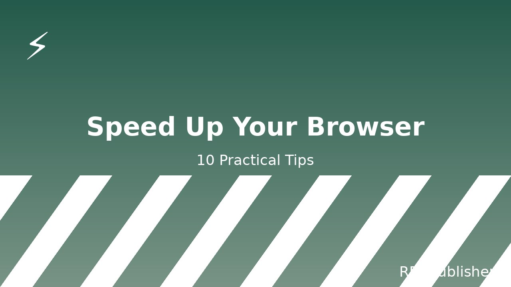

10 Practical Ways to Speed Up Your Browser
A slow browser is rarely your internet. It's almost always one of ten fixable things — extensions, settings, or habits. This guide walks through each one in order of biggest impact, with screenshots and the exact menu paths to flip.

Before you start: close every tab except this one, then run through the tips in order. After each one, take a 30-second feel-test — open five sites you actually use, scroll a bit, switch tabs. The cumulative effect is dramatic.
1Audit your extensions
This is the single biggest win, and almost no one does it. Open chrome://extensions (or about:addons in Firefox, edge://extensions in Edge). For every extension, ask one question: when did I last use the button it puts in my toolbar?
If the answer is "I don't know" or "I don't see a button", remove it. You can always reinstall from the store in two minutes.
The usual suspects: coupon finders, "readability" overlays, "privacy" extensions from companies you've never heard of, video downloaders, and anything that says "AI" in the title. Most of these run on every page you visit, all the time.
Expected impact: huge. Half the RAM your browser uses is usually extensions.
2Enable hardware acceleration
Modern browsers can offload graphics work to your GPU instead of doing it on the CPU. If your browser is using 30% of your CPU to render a webpage, this setting alone can halve that.
In Chrome / Edge: Settings → System → Use hardware acceleration when available. Make sure it's on. Restart the browser.
In Firefox: Settings → General → Performance. Uncheck "Use recommended performance settings", then check "Use hardware acceleration when available".
Expected impact: noticeable on older laptops, modest on newer ones.
3Clear the cache (the right way)
Don't clear your cache "to make things faster" — that almost never helps and breaks logins. The right time to clear the cache is when a specific site is misbehaving and the developer has told you to hard-refresh.
What does help: clearing site data for sites you no longer use. In Chrome: Settings → Privacy and security → Site settings → View permissions and data stored across sites. Sort by size. Delete anything you don't recognize or haven't visited in months.
Expected impact: small but free; mostly useful if your disk is almost full.
4Reduce open tabs
Every open tab uses RAM, even if it's in the background. "But I need them all" — you don't, you need them reachable. Use a session manager or a bookmark folder called "Later".
Two practical tactics:
- The 9-tab rule. If you have more than nine tabs open, close or bookmark the extras until you're under nine.
- Use a tab suspender. Extensions like "The Great Suspender" (or Chrome's built-in Memory Saver) unload tabs you haven't looked at in a while. They come back instantly when you click.
Expected impact: very large if you're a 40-tab person; small if you're a 6-tab person.
5Disable background apps
Chrome and Edge both keep small background processes running after you close the browser — for things like notifications, update checks and prefetch. On a slow machine, those processes can keep the browser feeling sluggish.
In Chrome: Settings → System → Continue running background apps when Google Chrome is closed. Turn it off.
In Edge: Settings → System and performance. Turn off "Startup boost" and "Continue running background extensions and apps when Microsoft Edge is closed".
Expected impact: small, but helps when the browser feels "warm" right after closing.
6Turn on memory saver / tab sleeping
Chrome has "Memory Saver" (under Performance). Firefox has "Tab Unloading" in about:config (browser.tabs.unloadOnLowMemory). Edge has similar under Performance.
All of them do the same thing: when system memory is tight, inactive tabs get unloaded and reload when you click back to them. Your CPU and battery will thank you.
Expected impact: large on laptops with 8GB RAM or less.
7Block heavy ads and trackers
The single biggest reason any given webpage feels slow is that it loads dozens of third-party trackers, ad networks and analytics scripts. A privacy extension like uBlock Origin blocks all of them by default, with no configuration.
uBlock Origin is free, open-source, and uses a fraction of the memory that ad-block-plus-style extensions do. There is no good reason not to install it. Get it from your browser's official extension store — not from a random "free ad blocker" download site.
Expected impact: pages load 2-5x faster on ad-heavy sites.
8Update your browser
This sounds obvious. It is not. A surprising fraction of "my browser is slow" tickets are fixed by clicking one button.
Chrome and Edge update silently in the background, but the update only finishes when you restart. If your browser has been open for two weeks, it's probably running an old version. Close everything, reopen.
Firefox: Menu → Help → About Firefox. Restart when prompted.
Expected impact: small in normal cases, very large if you haven't updated in six months.
9Reset your browser profile
If nothing else has worked, your browser profile may be corrupted. This is rare, but it happens — especially on computers that have been upgraded through several Windows or macOS versions.
Sign out of your browser, find the profile folder (Chrome: %LOCALAPPDATA%\Google\Chrome\User Data on Windows, ~/Library/Application Support/Google/Chrome on Mac), back it up, then create a fresh profile. Sign back in and install only the extensions you actually need.
This is a "last resort" step. It will fix things only if your profile is the problem — and the way to know is to do it.
Expected impact: depends; this is the nuclear option.
10Stop using your browser as a second operating system
Modern browsers run your email, your documents, your video calls, your code editor, your terminal, your design tools and sometimes your games. Each of those tabs is essentially a separate application. If you have 30 of them open, you're running 30 applications on a machine that was designed to run maybe five at once.
Pick one of these habits and start:
- Close tabs you haven't looked at today.
- Move heavy apps out of the browser — desktop email client, dedicated design tool, separate terminal.
- Use bookmarks or a read-later service instead of leaving articles open.
Expected impact: largest single change you can make, and the hardest.
What didn't make the list
"Clear cookies" — almost never speeds anything up; it just logs you out of sites.
"Disable JavaScript" — modern sites need it. The web will look broken. Don't.
"Buy more RAM" — yes, this works. No, it's not what this guide is about.
The five-minute version
If you only do three things from this list, do these:
- Audit your extensions (Tip 1).
- Install uBlock Origin (Tip 7).
- Turn on Memory Saver (Tip 6).
That combination fixes 80% of "my browser is slow" complaints without any software reinstalls. The rest of the list is for when those three don't get you all the way there.